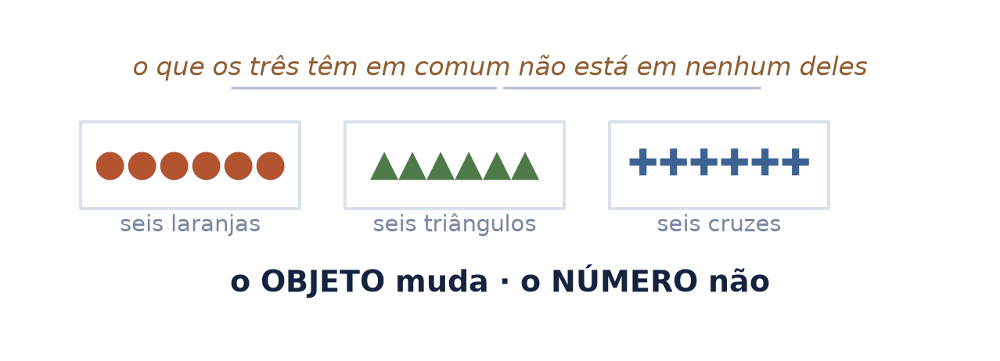
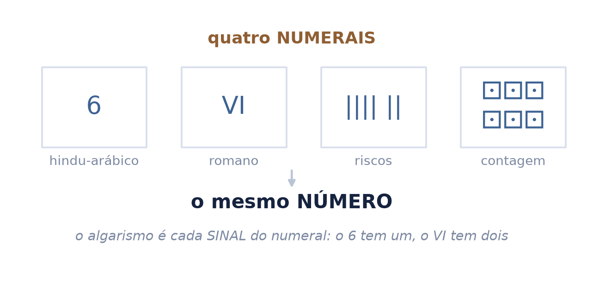
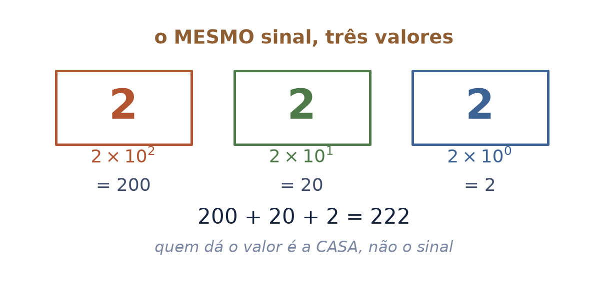
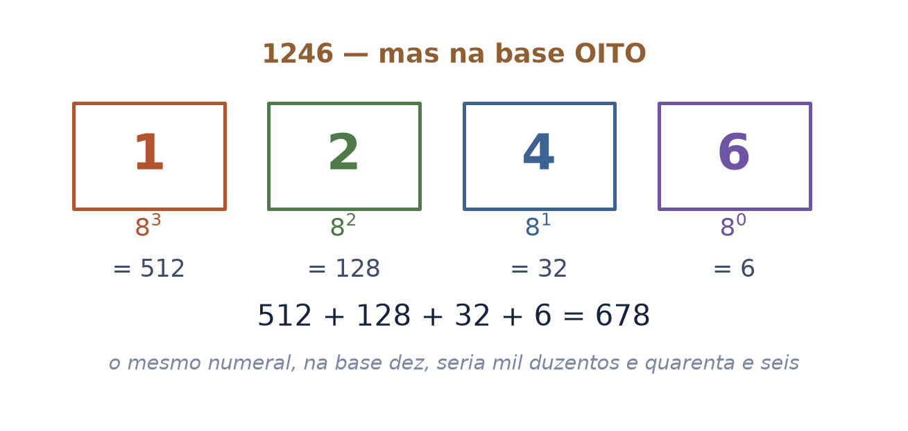
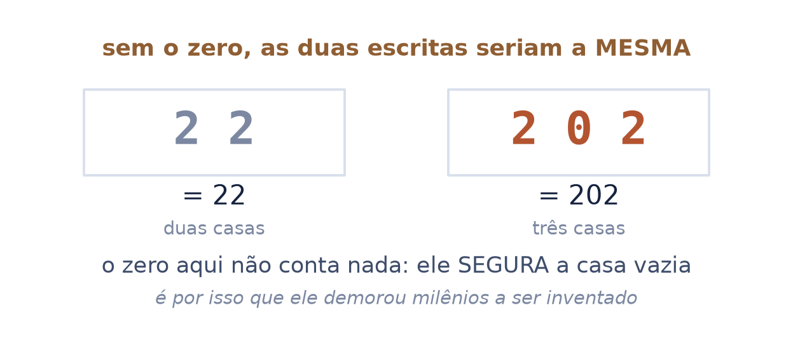
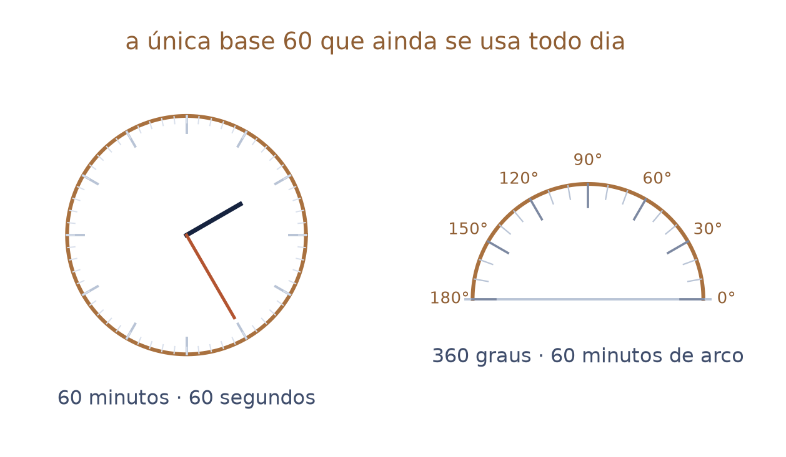
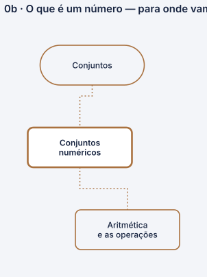

o que você escreve não é o número — é a roupa dele
O seminário seguinte fala de duas operações sobre números. Este diz o que são os números sobre os quais elas operam. É anterior por conteúdo, não por gosto.
Nos nove seminários da série, as palavras numeral e algarismo aparecem três vezes — todas no último deck do arco de cálculo, de passagem. Nenhum as distingue de número.
Autor · Mateus Felipe Alkimim Pereira
Coautora · Sara Catiele Nogueira Pereira
Orientador · Rosivaldo Antônio Gohnan
| número | a ideia de quantidade. Não se escreve, não se vê, não se apaga |
| numeral | a escrita de um número. \(6\), \(\mathrm{VI}\) e \(||||\,||\) são três numerais do mesmo número |
| algarismo | cada sinal de que o numeral é feito. O \(6\) tem um; o \(\mathrm{VI}\), dois |
| base | de quantas unidades em quantas o numeral sobe uma casa |
a escola usa "número" para as três, e é por isso que \(0{,}5=\tfrac12\) parece truque. São dois numerais do mesmo número — como \(6\) e \(\mathrm{VI}\).
De contar, e de mais nada. Não usa álgebra, não usa função, não usa geometria. É o primeiro seminário da série, e o único que não cobra nenhum outro.
A base. O seminário 1 fala das duas operações e de por que \(\mathbb{Z}\) e \(\mathbb{Q}\) precisaram existir; o seminário 5 mede ângulos em graus, e o grau é o último lugar onde a base 60 sobreviveu.
Quando você diz "seis", nunca é só seis: é seis de alguma coisa. Seis laranjas, seis triângulos, seis dedos. A quantidade carrega dois pedaços — um número e um objeto.
Troque o objeto e a quantidade muda. Troque a quantidade e o objeto continua o mesmo. Os dois são independentes, e é essa independência que deixa o número sozinho — sem laranja nenhuma grudada.
"Você tem uma quantidade. Uma quantidade é um par ordenado de dois substantivos: o número e o objeto. […] E onde está o seis na imaginação? O número é a ideia."
o que os três grupos da figura têm em comum não está em nenhum deles. Está em você.

Se o número é a ideia, o que aparece no papel é outra coisa: uma escrita dele. E toda escrita usa um alfabeto — no nosso caso, dez sinais, que se chamam algarismos.
Os quatro numerais da figura são o mesmo número. Nenhum é "o certo": são convenções diferentes, de povos diferentes, para a mesma ideia.
a pergunta "que número é esse?" quase sempre quer dizer "que numeral é esse, e em que base?". As duas folhas seguintes mostram que a segunda metade da pergunta não é detalhe.

Escreva \(222\). São três sinais iguais, e cada um vale uma coisa diferente: duas centenas, duas dezenas, duas unidades. Quem dá o valor não é o sinal — é a casa em que ele está.
Isso se chama notação posicional, e não é óbvio: os romanos não a tinham, e por isso \(\mathrm{MCMXCIV}\) precisa de sete sinais para dizer o que \(1994\) diz com quatro.
"Nosso número 222 usa a mesma cifra três vezes, mas com um significado diferente a cada vez. Uma vez ela representa duas unidades, a segunda vez significa dois dez, e por fim vale dois cem — isto é, duas vezes o quadrado da base 10."
A invenção é babilônica e tem cerca de 4.000 anos. É a mesma ideia que faz o nosso sistema funcionar.

Na base dez, cada casa vale dez vezes a anterior porque a gente combinou dez. Combine oito, e você escreve com os algarismos de \(0\) a \(7\); a cada oito unidades, sobe uma casa.
O numeral \(1246\) lido na base oito não é mil duzentos e quarenta e seis. É:
o numeral não diz qual é a base. Escrever \(1246\) sem dizer em que base é como escrever uma medida sem dizer se é metro ou pé.

Se a casa é que dá o valor, aparece um problema: como escrever um número em que uma casa está vazia? Sem resolver isso, \(22\) e \(202\) são a mesma escrita.
A solução é um sinal que não conta nada e serve só para dizer "aqui não tem". Os babilônios levaram mais de mil anos para inventá-lo.
"Por volta da época da conquista por Alexandre, o Grande, um sinal especial, feito de duas pequenas cunhas colocadas obliquamente, foi inventado para servir de marcador de posição onde faltava um algarismo."
o zero entrou na história como pontuação, não como quantidade. Ser também um número veio muito depois.

A base babilônica não era dez: era sessenta. Não por misticismo — sessenta se parte em metades, terços, quartos, quintos, sextos, décimos, doze avos, quinze avos, vinte avos e trinta avos. Dez divisores exatos.
"O sistema sexagesimal de numeração desfrutou de uma vida notavelmente longa, pois vestígios sobrevivem, infelizmente para a consistência, até hoje nas unidades de tempo e de medida de ângulo, apesar da forma fundamentalmente decimal da matemática em nossa sociedade."
sessenta minutos, sessenta segundos, trezentos e sessenta graus. Não é coincidência: é herança, com quatro mil anos.
É por aqui que este seminário entrega o próximo: o seminário 5 mede ângulos em graus, e o grau existe porque a base 60 sobreviveu.

Se o numeral é convenção e o número é ideia, sobra a pergunta que nenhuma folha anterior responde: a matemática foi inventada por gente, ou estava lá esperando ser achada?
As duas respostas têm defensores há dois mil e quinhentos anos, e esta série não vai decidir por você. O que ela faz é entregar a pergunta com nome e data, para você saber de quem é a resposta que está lendo.
"A matemática é criada mesmo. Só que ela não é criada sem razão da realidade. Ela é uma linguagem para comunicar os fenômenos — e uma linguagem não é uma ciência: é criada pelo homem."
esta é a única afirmação da série inteira que não tem livro atrás, e por isso é a única que vem assinada. O acervo desta casa não tem obra de filosofia da matemática — a lacuna está declarada, e enquanto ela existir a posição fica com o nome de quem a sustenta.
Nada nas contas. Tudo em como você lê um símbolo novo: se a matemática é linguagem, um símbolo que você não conhece não é um muro — é uma palavra que ninguém te apresentou.
Se a matemática é linguagem, ela tem de estar dentro daquilo que comunica. E está: a mesma derivada mede a velocidade de um corpo, a taxa de uma reação, o crescimento de uma população e a inclinação de uma curva na tela.
"Ela está dentro da comunicação dos fenômenos da física, da química, da biologia, do capitalismo, do financeiro, da computação — de tudo o que nós percebemos por aí."
É também a razão de esta série existir em dois arcos e não em um: o arco GAAL fala do que se preserva, o arco do cálculo fala do que acontece perto de um ponto. São duas gramáticas para dois tipos de fenômeno.
a consequência prática, e ela é o motivo desta casa: se é linguagem, dá para aprender como se aprende língua — ouvindo, lendo em voz alta, errando, e sendo apresentado às palavras em vez de adivinhá-las.
1 · Duas operações — não existem quatro operações,
existem duas, e cada uma tem um desfazedor.
2 · Números trigonométricos — três razões que não
mudam de tamanho, medidas em graus.
Este seminário ensina conjuntos numéricos — o nó que o mapa de pré-requisitos descreve como “que números existem, antes de operar com eles”. Ele tem um só antecessor, a linguagem dos conjuntos, e é quase o começo de tudo.
Do outro lado, ele alimenta a aritmética — e é por ela que chega a tudo o que vem depois. Nenhum curso ensina esta folha; todos a exigem.
o mesmo nó é dividido com o seminário 2, que constrói o \(\mathbb{Z}\). Este diz o que um número é; aquele diz quais existem, e em que ordem.

| o par ordenado | "uma quantidade é um par ordenado de dois substantivos" — aula do Prof. Rosivaldo, 30/08/2026, minutos 31,8 a 33,3 |
| número × numeral × algarismo | mesma aula, minuto 33,3 |
| a base oito | mesma aula, minutos 33,7 a 36,6 — o método é dele; a aritmética foi refeita e conferida, porque a transcrição automática corrompeu os números que ele disse em voz alta |
| o 222, o zero e a base 60 | Boyer & Merzbach, A History of Mathematics (3ª ed.), cap. 3 — Positional Numeration e Numbers and Fractions: Sexagesimals |
| criada ou descoberta | posição declarada do Prof. Rosivaldo, 30/08/2026, minutos 29,9 a 30,3. Sem livro atrás — a lacuna está declarada abaixo |
O acervo desta casa não tem obra de filosofia da matemática. Enquanto não tiver, a folha 9 continua sendo uma posição com nome e data, e não um fato de livro.
A aula que originou este seminário foi interrompida: a bateria do computador acabou aos 36,7 minutos, no meio do raciocínio sobre bases. O que faltava foi escrito aqui, com o Boyer ao lado — e é por isso que este é o deck da série com mais texto novo e menos aula herdada.
nenhuma folha aqui trata de conjuntos numéricos, de \(\mathbb{Z}\) e \(\mathbb{Q}\), nem de por que não se divide por zero. Isso é o seminário 1, e ele já existe.